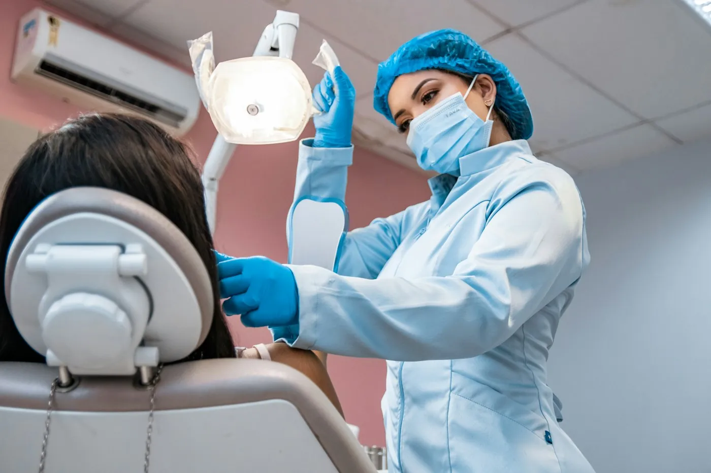
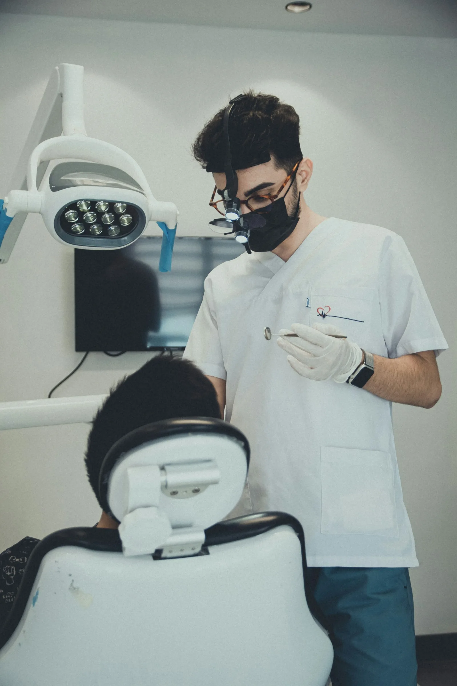
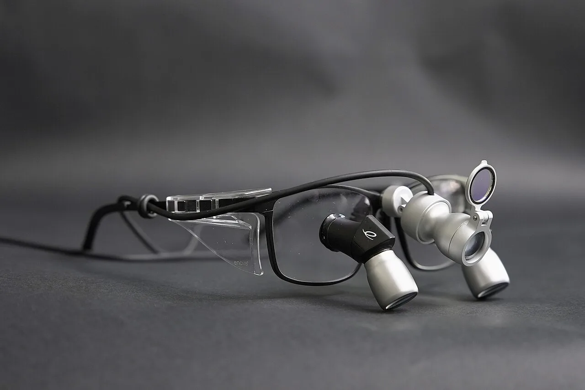

Avaliação
Exame completo de dentes, gengiva e mordida, com plano por escrito.
a partir degrátis

Avaliação grátisCoberto pelos 36 convêniosAbertas até 22h
O que é. Prevenção é o cuidado de rotina: exame completo, limpeza profissional, aplicação de flúor e as restaurações pequenas que impedem a cárie de crescer.
Em todas as unidades a consulta segue o mesmo protocolo, com raio-x digital quando necessário e a ficha guardada no sistema da rede.
Por que fazer. Uma cárie pequena vira restauração simples; a mesma cárie deixada para depois pode virar canal ou extração.
Você sai com o próximo retorno marcado e recebe o lembrete no WhatsApp, na unidade que preferir.
Quem confirma a indicação é a avaliação, com exame e, quando preciso, radiografia. Cada caso é diferente e o resultado depende da resposta de cada pessoa.
Exame completo de dentes, gengiva e mordida, com plano por escrito.
a partir degrátis

Remoção do tártaro, polimento e flúor quando indicado.
a partir deR$ 149

Resina na cor do dente, feita com lupa de aumento.
a partir deR$ 180
40 minde consulta
6 mesesaté a revisão
Mesmo diapara restaurações simples
Cadastro, convênio conferido na hora e as perguntas de saúde que importam para o atendimento.
Dentes, gengiva, língua e restaurações antigas, com raio-x digital quando necessário.
Raspagem do tártaro, polimento e, quando indicado, aplicação de flúor.
Se algo precisar de tratamento, você recebe o plano com o preço antes de começar.
Revisão em 6 meses, com lembrete no WhatsApp.
Não achou a sua? Mande pelo WhatsApp: a unidade mais perto responde em horário de atendimento.
Perguntar no WhatsApp +Sim, em todas as 9 unidades, com ou sem convênio. Ela inclui o exame e o plano por escrito; radiografias extras, quando pedidas, são informadas antes.
Os 36 convênios aceitos cobrem consulta, limpeza e flúor, conforme o seu plano. A recepção confere na hora pela carteirinha.
Restaurações simples, sim, quando há horário. Casos maiores são agendados para outra consulta.
Não. Os instrumentos tiram o tártaro, que é mais mole que o esmalte. Pode ficar uma sensibilidade leve por um ou dois dias.

Seu sorriso novo começa aqui
© 2026 Sorriso Prime Odontologia · Responsável técnica: Dra. Helena Viana, CRO-MG fictício · Nomes e registros fictícios · Marca criada para demonstraçãoSite de exemplo feito pela Blue Rose · Fotos: Unsplash e Wikimedia Commons (créditos abaixo)
Fotos desta página: Unsplash (licença Unsplash); Wikimedia Commons: lupa por Hs1195 (CC BY-SA 4.0).